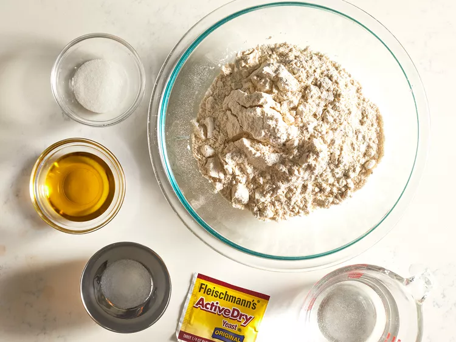

Pizza Crust Ingredients
You need just five ingredients (plus some warm water) to make this super simple pizza crust.
Yeast
Active dry yeast is a leavening agent, which means it's the ingredient that causes the pizza dough to rise.
Sugar
To activate your yeast, you'll need to dissolve it in warm water with a teaspoon of sugar. The sugar gives the yeast something to eat and speeds up the activation process. You'll know your yeast is active when it becomes bubbly and frothy on top.
Bread Flour
Bread flour is ideal for pizza crust becauseit creates chewier results than all-purpose flour. This is because it contains more protein, which helps produce lots of gluten. Gluten is what gives the crust elasticity.
Olive Oil
Olive oil serves a couple purposes when it comes to pizza crust: Not only does it add color and flavor, but it creates a barrier between the oil and water. This oily barrier prevents sogginess.
Salt
A little bit of salt goes a long way. Salt adds flavor, strengthens the gluten (creating a chewier crust), and slows down fermentation (resulting in a better rise).
Ingredients
-
1 cup warm water (110 degrees F/45 degrees C)
-
1 (.25 ounce) package active dry yeast
-
1 teaspoon white sugar
-
2 ½ cups bread flour
-
2 tablespoons olive oil
-
1 teaspoon salt
Direction
-
Gather all ingredients. Preheat oven to 450 degrees F (230 degrees C), and lightly grease a pizza pan.
 -
Place warm water in a bowl; add yeast and sugar. Mix and let stand until creamy, about 10 minutes.

-
Add flour, oil, and salt to the yeast mixture; beat until smooth. You can do this by hand or use a stand mixer fitted with a dough hook to make it easier.

-
Let rest for 5 minutes.

-
Turn dough out onto a lightly floured surface and pat or roll into a 12-inch circle.

-
Transfer to the prepared pizza pan.

-
Spread crust with sauce and toppings of your choice.

-
Bake in the preheated oven until golden brown, 15 to 20 minutes. Remove from the oven and let cool for 5 minutes before serving.